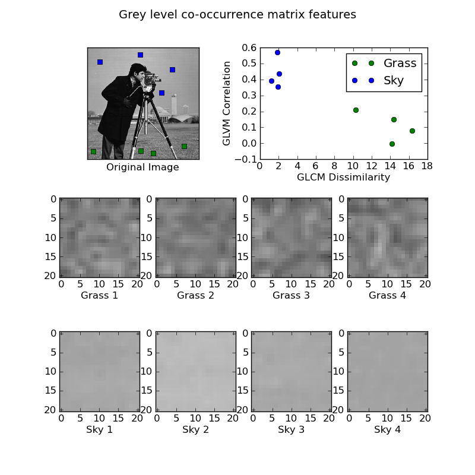

GLCM Texture Features¶
This example illustrates texture classification using texture classification using grey level co-occurrence matrices (GLCMs). A GLCM is a histogram of co-occurring greyscale values at a given offset over an image.
In this example, samples of two different textures are extracted from an image: grassy areas and sky areas. For each patch, a GLCM with a horizontal offset of 5 is computed. Next, two features of the GLCM matrices are computed: dissimilarity and correlation. These are plotted to illustrate that the classes form clusters in feature space.
In a typical classification problem, the final step (not included in this example) would be to train a classifier, such as logistic regression, to label image patches from new images.
Python source code: plot_glcm.py (generated using skimage 0.5)
from skimage.feature import greycomatrix, greycoprops
from skimage import data
import matplotlib.pyplot as plt
PATCH_SIZE = 21
# open the camera image
image = data.camera()
# select some patches from grassy areas of the image
grass_locations = [(474, 291), (440, 433), (466, 18), (462, 236)]
grass_patches = []
for loc in grass_locations:
grass_patches.append(image[loc[0]:loc[0] + PATCH_SIZE,
loc[1]:loc[1] + PATCH_SIZE])
# select some patches from sky areas of the image
sky_locations = [(54, 48), (21, 233), (90, 380), (195, 330)]
sky_patches = []
for loc in sky_locations:
sky_patches.append(image[loc[0]:loc[0] + PATCH_SIZE,
loc[1]:loc[1] + PATCH_SIZE])
# compute some GLCM properties each patch
xs = []
ys = []
for i, patch in enumerate(grass_patches + sky_patches):
glcm = greycomatrix(patch, [5], [0], 256, symmetric=True, normed=True)
xs.append(greycoprops(glcm, 'dissimilarity')[0, 0])
ys.append(greycoprops(glcm, 'correlation')[0, 0])
# create the figure
plt.figure(figsize=(8, 8))
# display the image patches
for i, patch in enumerate(grass_patches):
plt.subplot(3, len(grass_patches), len(grass_patches) * 1 + i + 1)
plt.imshow(patch, cmap=plt.cm.gray, interpolation='nearest',
vmin=0, vmax=255)
plt.xlabel('Grass %d' % (i + 1))
for i, patch in enumerate(sky_patches):
plt.subplot(3, len(grass_patches), len(grass_patches) * 2 + i + 1)
plt.imshow(patch, cmap=plt.cm.gray, interpolation='nearest',
vmin=0, vmax=255)
plt.xlabel('Sky %d' % (i + 1))
# display original image with locations of patches
plt.subplot(3, 2, 1)
plt.imshow(image, cmap=plt.cm.gray, interpolation='nearest',
vmin=0, vmax=255)
for (y, x) in grass_locations:
plt.plot(x + PATCH_SIZE / 2, y + PATCH_SIZE / 2, 'gs')
for (y, x) in sky_locations:
plt.plot(x + PATCH_SIZE / 2, y + PATCH_SIZE / 2, 'bs')
plt.xlabel('Original Image')
plt.xticks([])
plt.yticks([])
plt.axis('image')
# for each patch, plot (dissimilarity, correlation)
plt.subplot(3, 2, 2)
plt.plot(xs[:len(grass_patches)], ys[:len(grass_patches)], 'go',
label='Grass')
plt.plot(xs[len(grass_patches):], ys[len(grass_patches):], 'bo',
label='Sky')
plt.xlabel('GLCM Dissimilarity')
plt.ylabel('GLVM Correlation')
plt.legend()
# display the patches and plot
plt.suptitle('Grey level co-occurrence matrix features', fontsize=14)
plt.show()